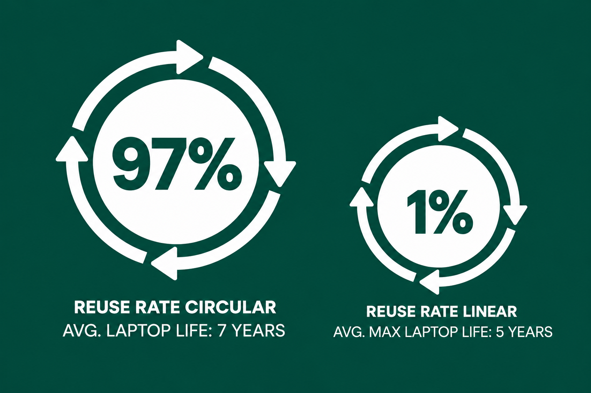
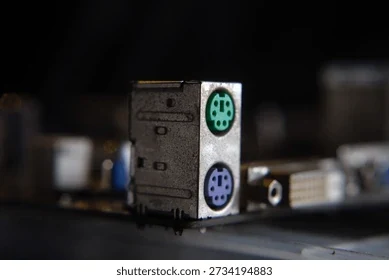

€756.2M
2025 revenue
€30.5M
2025 EBITA
7,000+
Global Clients
The opportunity
Make every device worth more
Businesses need IT, but buying new devices repeatedly is costly and resource-intensive. Leasing creates a way to manage, recover and reuse devices instead of letting them become waste.

The circular model
Leasing makes reuse part of the business model
3stepIT retains control of the device lifecycle. Planned returns create a supply of used equipment that can be refurbished and put back to work.
Bankability indicators
From leasing company to circular platform
Bank-backed
financing model
Predictable returns and
recoverable assets
Proven scale and
financial performance

“They have unrivalled risk management skills, we have IT asset management expertise.”
CEO of BNP Paribas 3 Step IT.